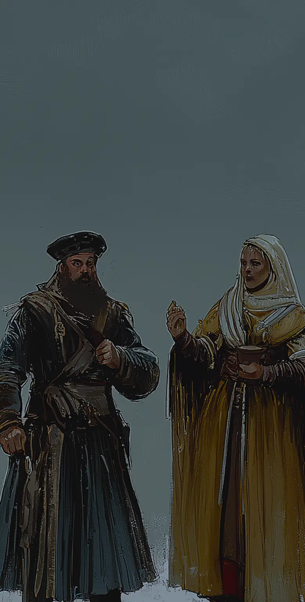
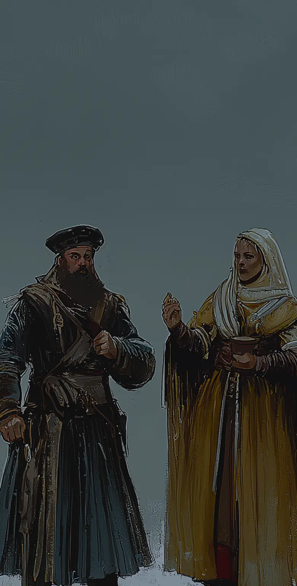
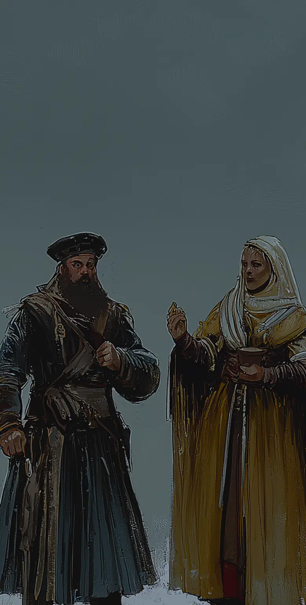
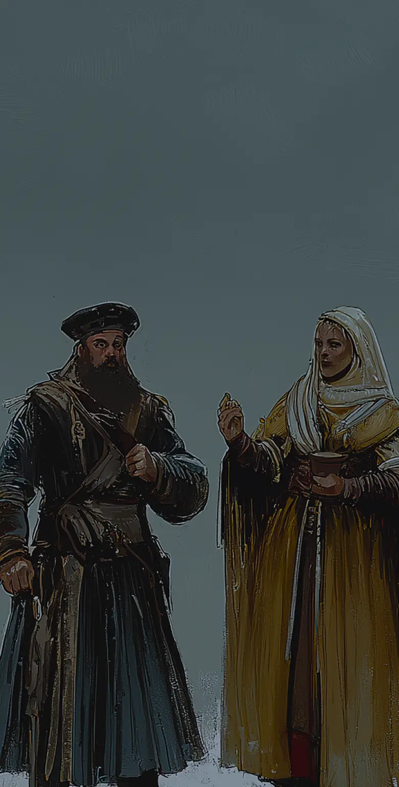
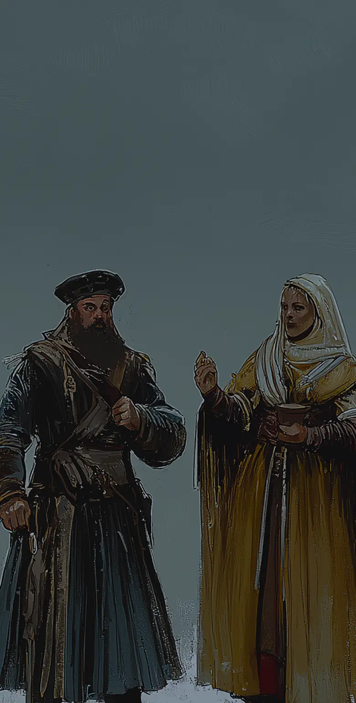
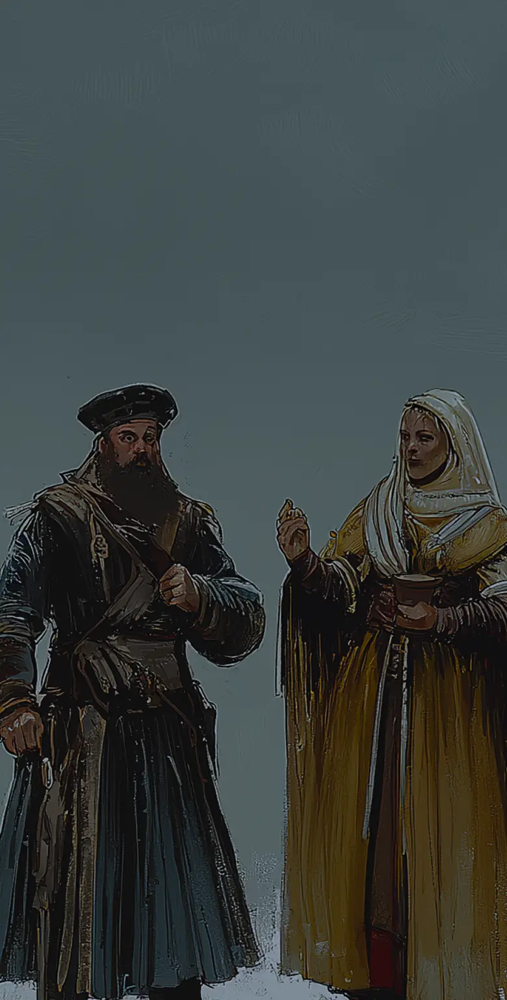

#хэштеги
#хэштеги
Насколько русские не пригодны для монотонной кропотливой работы, настолько же они тяготеют к свершениям и подвигам. Усердная работа в России не вознаграждается. По крайней мере такого вы не найдете ни в русских сказках, ни в русской литературе. В России определенно существует культ случая. Чудо, счастливая случайность - движущий мотив половины легенд, былин и даже поговорок. Чтобы выиграть в жизненную лотерею достаточно оказаться в нужном месте ну а уж тут приложить на короткий момент максимум
Иванушка-дурачок получает все!
Культ счастливой случайности отражает стремление русских к
быстрому успеху. Самый Популярный герой сказок -
“Иван-дурак” (или ласково Иванушка-дурачок)
Чтобы оказаться успешным, ему требуется лишь простота и доброта.
Остальное достается само благодаря помощи волшебных существ. Многочисленные примеры подобных сказок есть как
в мультипликации, так и в фильмах.
Висторию о "Сивке-Бурке", Главный герой
получает помощь то от волшебного коня, то волка, то щуки.
Русские сказки формируют представление о неоценимой роли внешних сил и случайности. Отвергнуть рациональное
и поверить в чудо - важнее всего остального. . Здесь мы также видим параллель веры в исключительность
(богоизбранность) русского народа (ссылка на главу про кахетон).
Кропотливое возделывание клочка земли? Ну нет. Земли в России много, хоть она и низкого в основном качества,
а потому она не заслуживает почтительного к себе отношения. Урожай на большей части территории определяет
воля погоды. Так сформироваласьединственно правильная стратегия - беречь энергию в условиях дефицита
ресурсов.
Подобное мышление ярко видно в классических произведениях XIX-XX вв. Например, в произведении "Тихий Дон"
Михаила Шолохова. Роман охватывает
жизнь донских казаков в начале XX века, включая события Первой мировой
войны и Гражданской войны в России. В произведении природа играет важную роль: «...вода затопила все поля, и
казаков охватило чувство безысходности».
В знаменитом романе-эпопее "Война и мир" Льва
Толстого охватывается широкий спектр человеческих судеб на
фоне Наполеоновских войн. В нем Толстой уделяет внимание жизни крестьян и их зависимости от урожая. В
частности, он описывает, как войны и разорение земель приводят к нехватке продовольствия. Погодные условия,
такие как дождь или засуха, также влияют на сбор урожая: «Урожай был плох, и крестьяне в этом году
голодали».
Подробнее о русской литературе можно прочитать в соответствующей главе (ссылка на главу про литературу).
В этом месте внимательный читатель мне, возможно, возразит. Как же так, Россия - страна, которая на
протяжении всей истории живет за счет ресурсов. Она продает, то лес, то
пеньку (сырье для корабельных
канатов), то поташ (универсальное удобрение), то пушнину или пшеницу (с общей статистикой экспорта России за
2022 год можно ознакомиться здесь), то
военные контингенты другим европейским державам. Да, продает. Но
этого “ресурса, при делении между всеми, остается весьма немного. В обычной же жизни русские обделены
ресурсами и в первую очередь сельскохозяйственными.
Устранить противоречия между ландшафтными и ресурсными ограничениями, отстающими агротехнологии и системой
государственной власти Россия так и не смогла. Произошло вытеснение проблем в “ коллективное
бессознательное”,. Многие исследователи объясняют стремление полагаться на волю случая особенностью
русского
ландшафта. Низкая плодородность почв дополняется непредсказуемой погодой. Поздние заморозки, засушливое лето
и проливные дожди осенью могут в равной степени минимизировать урожай ниже черты выживания. Как отнестись к
этому? Русские выбрали своим ответом фатализм.
“Русский фатализм – особого рода. В отличие от восточного фатализма, он является не созерцательным, а
деятельным. Русские – "активные фаталисты". Они не ждут милости от природы, а всегда готовы отнять у природы
все, что можно, и даже то, что нельзя. Как следствие, русский фатализм – бунтарский, он не усыпляет, а
будит. Он заставляет русских людей идти все время вперед, не оглядываясь и не рассуждая. Это позволило
русским колонизировать огромные, не очень приспособленные для нормальной жизни пространства, создать на этих
просторах империю и отстоять ее независимость в бесчисленных войнах.” - такие выводы делает Владимир
Пастухов в своем блоге для
bbc.com. С другой стороны это похоже на заимствованную у монголов стратегии
захвата пространств. Кочевники не полагались на сельское хозяйство, рассчитывая на то, что прокормить
огромные стада лошадей могут лишь огромные неосвоенные степи.
Жесткий дедлайн активирует суперспособность русских - работать много и интенсивно, чтобы добиться
результата. Не нужно планировать - нужно много работать в условиях цейтнота. Для яркого примера нам не
понадобиться исторический экскурс. Достаточно взглянуть на современных русских бабушек, известных во всем
мире как “babúshka”. Многие из них живут в загородном доме, на даче,
по строгому “ Календарю огородника”
(фото ниже). Данная инструкция учитывает сезоны, лунные фазы и даже нумерологию. Дело в том, что любому
человеку для долгой и счастливой жизни нужна цель. Бабушки часто выбирают себе героические цели - самый
большой, красивый и плодородный огород. Но времени мало, поэтому их подвиг начинается в 6 утра и
подразумевает большое количество физического труда. А все потому, что привычка жить в трудовом подвиге не
позволяет размеренно наслаждаться жизнью.
Отражение этого беспокойства можно найти также в советском фильме "Трактористы" (1939). Фильм о внедрении
тракторов в сельское хозяйство. Здесь отражены проблемы, с которыми сталкиваются крестьяне в условиях
нехватки времени на уборку урожая.
Или фильм "Земля" (1930) — классика
советского кино, которая затрагивает темы сельского труда и борьбы за
урожай, показывая напряженность и трудности, с которыми сталкиваются крестьяне.
Источник: https://stihi.ru/avtor/demversum
Рядовая каждодневная работа противна русской натуре. Само слово “рутина” имеет в русском в отличии от других
языков яркую негативную окраску, и часто является синонимом слова угнетение Проработать на одном и том же
месте 50 лет и с почетом выйти на пенсию? Для России это вполне стандартная ситуация, которая будет оценена
как жизненный не-успех.
В популярном советском романе писателя Николая Островского “Как закалялась
сталь” описан хрестоматийный
пример русского трудового героизма. Эта книга во многом является артефактом человеческого подвига для
большинства россиян. Ее назовут в качестве первым примером для ситуации, когда нужно описать, что такое
преодоление себя. Помимо книги также существует одноименный многосерийный фильм.
По сюжету “Большевики решают проложить узкоколейную железнодорожную трассу. Терпя лишения добровольцы вместе
с Павкой строят узкоколейку. Значительная часть книги посвящена описанию “трудового подвига”. Однако критики
справедливо отмечают, что объем и интенсивность работ сильно преувеличены автором. Будь это обычная
коммерческая стройка, задача не воспринималась бы как сверх ординарная.
Писатель
Михаил Веллер, начинавший свою работу в строительных студенческих отрядах приводит подробный
беспристрастный отчет о временных затратах.
“Изумительная вещь обнаружилась! Я там (в книге “Как закалялась сталь”) такого вычитал ...
Ну, что городские власти в ноябре обнаружили, что скоро будет зима, а дров нет – это по нашему, по-советски;
это уже неплохо.
Сколько послали комсомольцев? – Триста.
Сколько верст надо построить? – Шесть.
Кто проходил в первом классе арифметику? Сколько будет разделить триста комсомольцев на шесть верст? – Будет
один комсомолец на двадцать метров. Двадцать метров!
Объясняю, что такое двадцать метров. Это двадцать пять шпал и три звена рельсов (они шестиметровые).
Шпала-кругляк под узкоколейку весит килограмм двадцать пять. Рельс тогда под узкоколейку шел практически
весь ТИП-18 или ТИП-22 – это восемнадцать или двадцать два килограмма на погонный метр, а весь рельс, стало
быть, сто десять – сто тридцать кило. И вот эти двадцать пять шпал и шесть рельсов на человека они и делали
геройски бесконечные недели!! эпопея!! причем шпалы лежали уже готовые, только подноси и клади! да мы им эту
вонючую дорогу вдевятером за месяц сделали бы!
Организация – сверхбездарная! куча народу без толку. Делись на три смены в круглосуточную, доставай любые
тележки возить шпалы и рельсы вдоль трассы, – да там на два дня максимум работы для такой оравы!
А самое главное – на кой черт они долбили в мерзлой твердой земле ямки под шпалы??!!
Какой идиот, какой саботажник им это велел?! Рабочая ветка на пару месяцев, скорость на ней не нужна, – на
фига копать?! кладут прямо на землю! все, всегда, везде!!”
Конечно, роман является для русских образом человеческого подвига не потому, что речь идет о строительстве
железнодорожной трассы. Речь могла идти практически о любом действии, главное - показать преодоление и
самопожертвование героя ради общей высшей цели. Для эмоционального подтекста мелочи вроде места подвига и
физического его воплощения не имеют значения.
Русский подвиг - краткосрочная чрезмерная концентрация усилий на определенное задаче. Желательно с риском
для жизни. Такое поведение русские поддерживают и одобряют. Даже если подвиг стал естественным следствием
ранее допущенных ошибок.
Например, авария
на Чернобыльской АЭС. Оператор Чернобыльской АЭС перемудрил и режимами работы и
стимулировал взрыв реактора? Это можно простить, если он действовал в интересах науки, если он сам пострадал
и потом публично покаялся. Три условия - идеалистическая цель, личное страдания и публичное покаяние -
искупят и ошибку, и преступление.
Подвиг должен быть представлен, как подвиг. “Группа французских шахтеров, путешествующая по СССР,
по-товарищески заменила на одной из шахт бригаду советских шахтеров и без напряжения, не подозревая даже об
этом, выполнила стахановскую норму” Андре Жид - Возвращение
из СССР.
И все же - подвиг для русских - это временное и сиюминутное. Постоянно живя на грани выживания, русские
научились ценить СТАБИЛЬНОСТЬ. Это не рутина, а скорее всего оцепенение, попытка остановить изменения и само
время.
Политический феномен Владимира Путина базируется на том, что он выделил и оформил обещание “неизменности”
для своих избирателей. Его посыл - “хуже не будет” соответствовал одному из глубинных желаний“широких масс”.
Прочтя интервью 2007 года с Леонидом Поляковым,
заведующим кафедрой общей политологии Высшей школы экономики
(топ-10 Российских Университетов), можно легко представить, что
материал создан в 2020х годах: “О том, что
они слепо любят Владимира Путина как президента, нет, вовсе не поэтому. Вовсе потому, что каждый человек,
прожив свою жизнь, понял, что сегодня за последние 8 лет мы попали в некую полосу стабильности и жизнь стала
более прогнозируемой. Об этом говорили все: и спортсмены, и ветераны, и пенсионеры, и молодежь об этом
говорила. И независимо от возраста и социального положения, люди говорили мы хотим продолжения этого курса,
мы хотим, чтобы человек, который этот курс заложил, мог влиять на этот курс, независимо от конфигурации
власти. ”
Означает ли это, что Россия стабильна и неизменна. Конечно, нет. Жизнь, социум и сама государственная власть
не делают малейших попыток, чтобы эту стабильность обеспечить. Формальные правила игры здесь постоянно и
непредсказуемо меняются. Порой суть и темп изменений выглядят настолько карикатурно, что кажется что в этом
есть какой то отдельный замысел.
Социальные исследования
от ТАСС 2021 года показывают, что дители России не находятся в иллюзии относительно
подлинности стабильности: “Подавляющее большинство (81%) гордятся историей России, но только 29% отметили,
что по мнению их родных, друзей, коллег, знакомых, у России есть долгосрочная цель и ясное направление
развития. Среди опрошенных 51% чувствуют уверенность в завтрашнем дне, но только 40% согласились с
утверждением о том, что наши дети будут жить лучше нас.”
Очень характерный пример - российская пенсионная
реформа. Несколько лет власти пропагандировали идею
развития
Негосударственных пенсионных фондов и “софинансирования” добровольных накоплений. Государство брало
на себя обязательства “дополнять” пенсионные сбережения граждан. Закончилось все замораживанием
сформированных фондов на неопределенный срок. Граждане получили очередной наглядный урок - планировать на
длительный период в России невозможно, доверять государственным инициативам нельзя.
В заключении можно сказать, что желание “пойти на подвиги” и необходимость стабильной жизни уживаются в
русском человеке увы, происходит за счет подавления предприимчивости и перманентной депрессии в обществе.